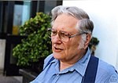

Nació el 5 de junio de 1933 en Toronto, Canadá. Eminente matemático y científico computacional, estudió en la Universidad de Toronto. Por sus contribuciones al análisis numérico, particularmente en computación en coma flotante. Su contribución ha sido el análisis numérico, en el estudio de los métodos exactos y eficientes de solucionar problemas numéricos sobre un ordenador con la precisión finita, un campo sumamente importante en la física y la ingeniería. En 1989 obtuvo el premio Alan Turing por incorporar un algoritmo para reducir al mínimo el error introducido cuando una adición de una secuencia y en la coma flotante de la precisión finita numérica (el IEEE 754 Standard for Binary Floating-Point Arithmetic). Hoy sigue trabajando en la Universidad de Berkeley como profesor de Matemáticas y ciencias de la computación.